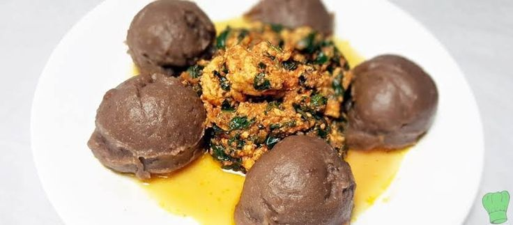
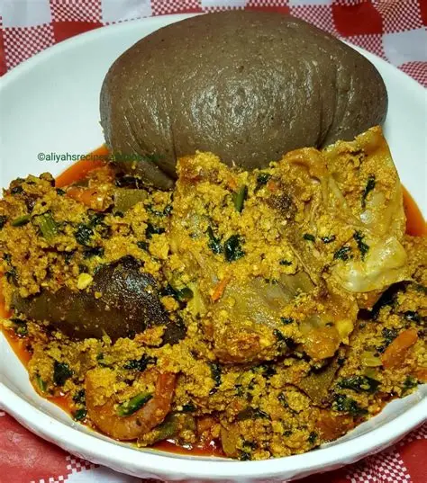
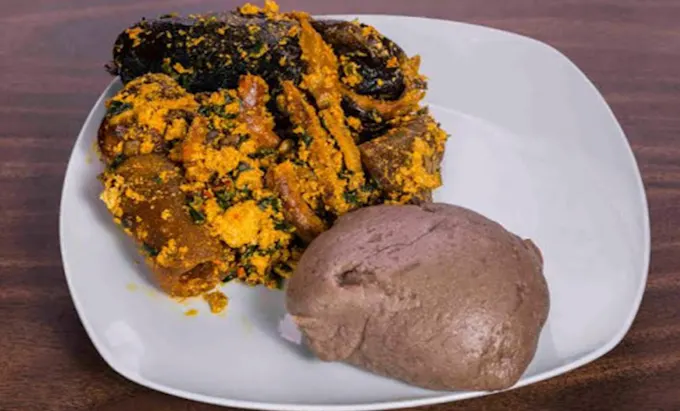

Recipe Information
Preparation Time: 20 minutes
Cooking Time: 30 minutes
Servings: 4 people
Difficulty Level: Intermediate
Ingredients
- 2 cups of yam flour (elubo)
- Water
- Salt (optional)
- 2 cups of ground egusi (melon seeds)
- 1 cup of palm oil
- 1 onion, chopped
- 2 cups of spinach or bitter leaf
- Seasoning cubes
- Salt to taste
Nutritional Information
This dish is rich in carbohydrates from the yam flour, protein from the egusi, and healthy fats from the palm oil. It also provides essential vitamins and minerals from the vegetables used.
- Calories: Approximately 450 per serving
- Protein: 15g
- Carbohydrates: 60g
- Fat: 20g
- Fiber: 5g
Instructions
- In a pot, bring water to a boil. Gradually add the yam flour while stirring continuously to avoid lumps. Cook until it becomes smooth and stretchy.
- In another pot, heat palm oil and lightly fry the chopped onion until translucent.
- Add the ground egusi to the pot and stir well. Cook for about 5-10 minutes.
- Add the spinach or bitter leaf, seasoning cubes, and salt. Stir well.
- Allow to simmer for another 5 minutes.
- Serve the Amala with the Egusi soup on top.
Tips
- Ensure to stir the Amala continuously to achieve the right consistency.
- You can adjust the thickness of the Egusi soup by adding more water if needed.
- Feel free to add your choice of meat or fish to the Egusi for extra flavor.
- Amala can be enjoyed with a variety of soups, so feel free to experiment!
- For a richer taste, you can add locust beans (iru) to the Egusi soup.
Recipe Link
For more details and variations of this recipe, visit
Images
This is a traditional serving of Amala with Egusi.
Enjoy your delicious Amala with Egusi!
Another view of the dish.
